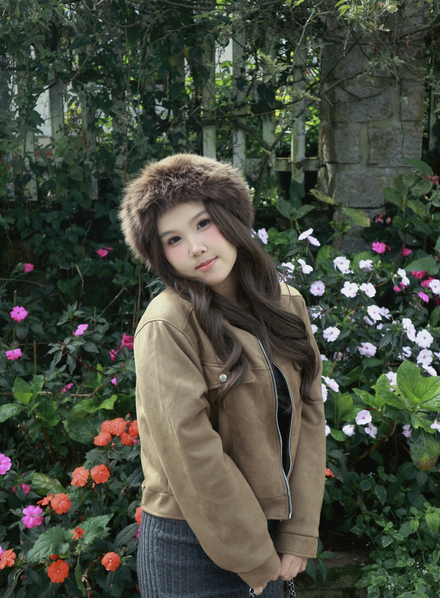

Holland 荷倫碼測試深度分析
A 藝術型 (Artistic)
我具備高度的感性直覺與創作渴望。從國中時期在 Wattpad 撰寫言情小說開始，我就對非結構化的思考感到自在。這讓我在 MIS 領域中，對網頁前端設計（HTML/CSS）的視覺美感與使用者體驗（UX/UI）有著與生俱來的堅持。
S 社會型 (Social)
重視人群與社群的連結。雖然我天生內向，但我熱衷於透過數位媒介（如 Vlog 經營）與人溝通。我喜歡協助他人成長，這在 MIS 專案中轉化為理解使用者痛點、開發出人性化資訊系統的動力。
結合 104 職涯銀行的分析建議，我最適合擔任數位內容企劃或前端設計師。我能將理性資管技術（I）轉化為感性故事（A/S）。
專業技能與自我充實
💻 MIS 資訊專業技能
- Python 基礎程式開發與資料分析
- HTML5 / CSS3 網頁設計與佈局
- GitHub 版本控制與專案管理
- Microsoft SQL Server 資料庫基礎
🗣️ 語言與創作能力
- 中文/越文： 雙語溝通流暢
- 英文/泰文： 持續精進中，目標邁向國際市場
- 創意寫作： Wattpad 作品曾獲廣大讀者支持
- 影音剪輯： 獨立經營個人留學生活 Vlog
生活風采與成果展示


(以上照片展示了我多元發展的一面，從數據分析到創意剪輯。)
關於我：跨國背景下的深度自傳
你好，我是范阮越姜。在校園裡，我可能是一名安靜、略顯害羞的留學生；但在數位世界裡，我是一個擁有無限熱情的創作者。我習慣在靜謐中觀察，在數位中爆發創意。
從 Wattpad 到留學 Vlog：創作者基因的蛻變
國中時期，我是一名熱愛小說創作的 Wattpad 作者。在那段時期，我學會了如何透過文字影響上千名讀者。這段經歷培養了我極佳的邏輯敘事能力——這在 MIS 領域極為重要，因為系統開發本質上就是在說一個「解決問題的故事」。現在，我將這份熱情轉化為經營個人 Vlog 頻道，記錄在台灣的留學點滴。
挑戰自我：內向者在團隊中的「 Buddie」精神
雖然性格內向，但我熱衷於自我成長。目前我除了精進 Python、英語與泰語 能力，也正積極學習數位行銷技巧。在團隊合作中，我絕對是一個負責任的夥伴。內向讓我學會細膩思考，準時完成任務是我的代名詞，我深信有溫度的科技才是未來趨勢。